Incubator
| Incubator | |
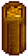 | |
| Hatches eggs into baby chickens and ducks. | |
| Information | |
| Cost: | N/A |
- See also: Slime Incubator or Ostrich Incubator
The Incubator is a tool used to hatch eggs. It comes with the Big Coop and the Deluxe Coop, where it appears to the left of the Hay Hopper.
To use the Incubator, place an egg into it by left-clicking. An egg cannot be removed once it is placed in an incubator unless the coop is at capacity.
If the coop is at capacity (8 animals for a Big Coop, 12 for a Deluxe Coop), the egg won't hatch until a space is freed up. This can happen by selling an animal or moving an animal to another coop. Once the coop is below capacity, entering the building will cause the egg to hatch instantly.
Incubation Times
Below are the times it takes to hatch an egg using the Incubator.
These times are cut in half with the Coopmaster Profession. Fairy Dust does not work on Incubators.
| Egg | Hatches | Processing Time[1] |
|---|---|---|
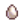 Large Egg |
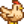 Chicken |
|
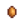 Brown Egg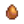 Large Brown Egg |
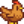 Chicken | |
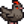 Void Chicken | ||
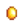 Golden Egg |
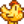 Golden Chicken | |
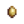 Duck Egg |
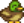 Duck | |
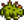 Dinosaur |
References
- ↑ See Object::performObjectDropInAction in the game code.
History
- 1.6: Brown and white eggs now always give the corresponding color of chicken, instead of choosing a chicken color randomly.
- 1.6.4: Incubated eggs can now be retrieved if the coop is at capacity.
| Tools | |
|---|---|
| Basic | Axes • Golden Scythe • Iridium Scythe • Hoes • Pans • Pickaxes • Scythe • Trash Cans • Watering Cans |
| Fishing | Training Rod • Bamboo Pole • Fiberglass Rod • Iridium Rod • Advanced Iridium Rod • Crab Pot |
| Other | Auto-Grabber • Auto-Petter • Hay Hopper • Heater • Incubator • Milk Pail • Ostrich Incubator • Shears |